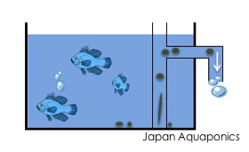
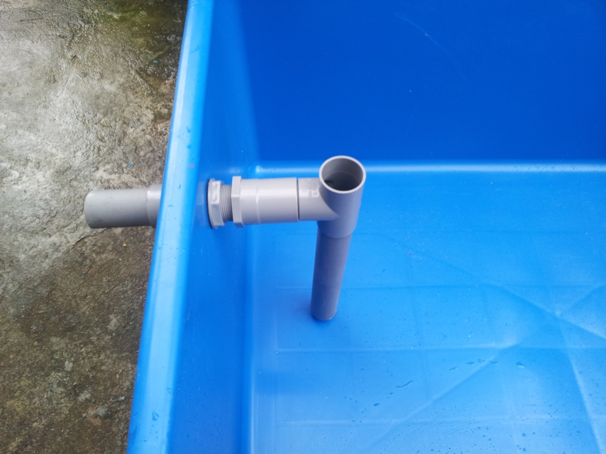

O segredo de um sistema de aquaponia produtivo é a remoção eficiente dos dejetos sólidos. A ideia central é que a água arraste a sujeira para os filtros através da circulação constante.
O Sistema de Overflow (Transbordo)
Para garantir que a sujeira do fundo seja removida com segurança, utilizamos o Overflow. Ele utiliza a pressão hidrostática para forçar a saída dos dejetos pesados pelo cano interno sem precisar furar a base do tanque.

Segurança máxima: saída de água posicionada na parte superior do tanque.RISCO TÉCNICO: Nunca fure o fundo da sua caixa d'água. Um erro na flange pode esvaziar o sistema em minutos e comprometer suas tilápias. O Overflow mantém o nível de segurança constante.
Filtragem Natural e Nutrição
Além da hidráulica, você pode usar a biologia a seu favor. A Lemna (Lentilha d'água) atua como um filtro biológico de superfície, absorvendo amônia e servindo como alimento nutritivo para os peixes.

Mantenha seu Tanque Saudável
As mudas de Lemna ajudam a clarear a água e reduzem seu custo com ração. Inicie sua produção com este kit de 250 mudas validadas.
VER NO MERCADO LIVRE →
Dreno de fundo: a água é "sugada" para o transbordo pela pressão da bomba.Tecnologia de Performance
Para o sistema de overflow funcionar, você precisa de uma bomba confiável e mídias que processem a sujeira rapidamente. Equipamentos amadores são o caminho mais curto para a perda de peixes.
Equipamentos de Performance

Bomba Ocean Tech AC Pump
O motor eletrônico ideal para manter o fluxo do seu overflow 24/7.

Nano Rings High Energy
A matriz biológica necessária para processar os dejetos filtrados.
Dicas de Engenharia:
- Furo de Respiro: Essencial na curva superior do overflow para evitar o esvaziamento acidental do tanque.
- Manejo: Mesmo com overflow, uma TPA mensal é recomendada para renovação biológica.